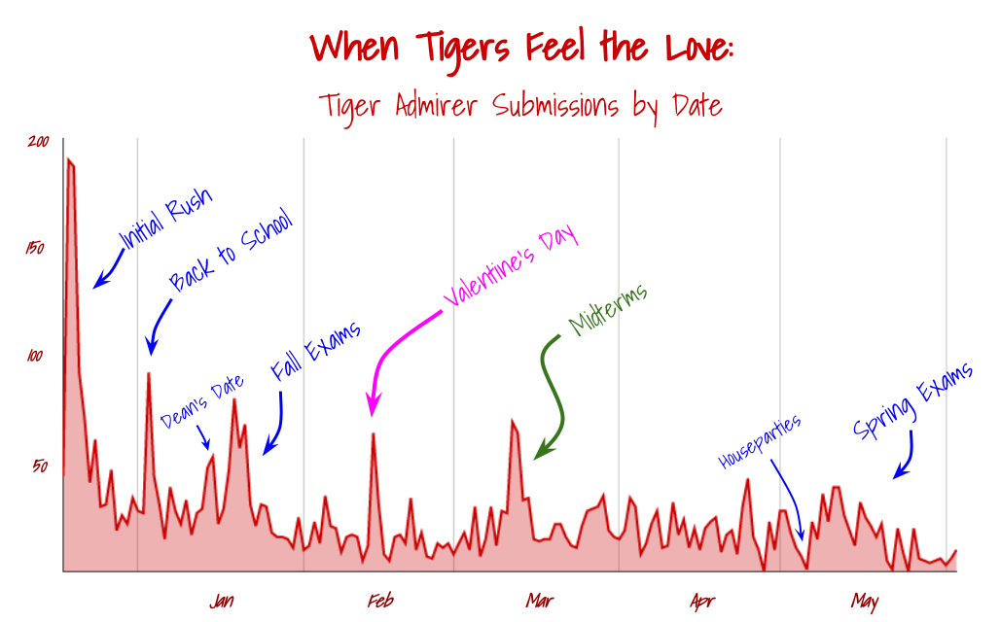
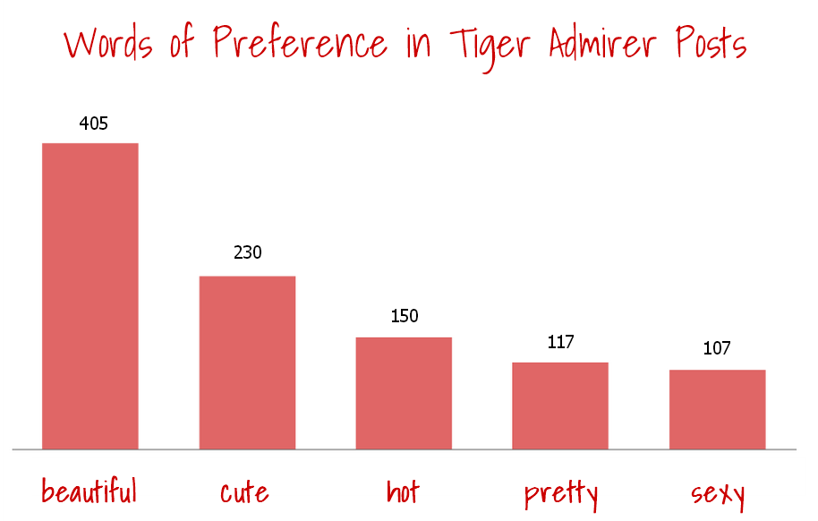

Spreading the (Facebook) Love
Tiger Compliments and Tiger Admirers
Part of the recent university phenomenon, the Tiger Compliments and Tiger Admirers Facebook accounts allow students to anonymously submit compliments and declarations of love, which are later posted, tagging the recipient.
These recently took off at Princeton, and with over six months of consistent posts each (totalling to a medium-sized book), they offer a decent representation of Princetonian love and lust.
Using the Facebook Graph API, I managed to scrape the posts from online and do a little analysis, and found some pretty cool stuff. Check it out!
Overall Stats
Here are some of the basic numbers, as of the end of June 2013:
Tiger Admirers |
Tiger Compliments |
4321 Total Posts | 2235 Total Posts |
2663 Tagged Posts | 1996 Tagged Posts |
1286 Unique Tagged Individuals | 1291 Unique Tagged Individuals |
2.07 Average Tagged Posts/Person | 1.55 Average Tagged Posts/Person: |
157331 Words | 91329 Words |
45997 Likes | 32242 Likes |
Off the bat, there are almost twice as many TA posts than TC posts. This is partly because of all the museful posts about love and partly because there are individuals who are ridiculously admired: Elizabeth Cai and Leora Friedman come out on top, with about 50 posts each! The top Tiger Complimentee got 11, in comparison (Lucy Li!).
When you count it up, though, both have almost exactly 1300 unique individuals tagged.
Wait, that’s fishy. Though TA has twice as many posts and almost 700 more tagged posts, both have almost exactly the same number of unique tagged individuals. Are the same set of people getting complimented and (slightly more often) admired?
After digging in a little, it turns out: not really! Only one-fourth received both a TA and a TC post. (That’s 515 getting both and 1547 combined receiving one of either, for those counting.) We can draw up some basic categories:
Also, that means, in total, over 2000 people have received either a Tiger Compliment or Tiger Admirer post! That’s two out of every five students in the undergraduate student body![1] Nice reach![2]
Posts Over Time
Using the Facebook posts’ datestamps, I was able to collect submission dates of all the TA/TC posts. Of course, there’s a tiny delay for the moderators to post the submissions, but submissions are generally posted fairly quickly. Using this, I was able to figure out the approximate number of posts each day, plotted below:
Tiger Compliments looks fairly typical -- a steadily declining curve, with a little rush at the end of the year. Tiger Admirers’ posts, on the other hand show a lot more action.
With the Princeton Academic Calendar in hand, I took a closer look:

If you’re looking for desperate, questing desire, find out your lover’s test schedule.
Word Analysis
The 248,000 words of TA and TC posts offer several hundred pages of Princetonian word choice of desire, love, and angst. Using this mountain of data, I searched through and found a couple of interesting trends on how we express ourselves.
To start, here are the top compliments we like to give:
We’re a loving bunch of kind, beautiful, awesome friends with the best smiles ever.
Creative isn’t up there, though, which is probably why these are all so boring.
More interestingly, exactly the same number of people at Princeton were complimented on how nice their hair is and how inspiring they are (45 posts each). Either way, if it wasn’t already obvious, this confirms that our most successful alumnus is MObama ‘85:
Meanwhile, the most common word in Tiger Admirers posts was “love”. Hearteningly, “hate” came in a dismal 267th, used twenty times less.
More importantly, I managed to answer an age-old debate: what are we really? Pretty? Hot? Cute?

Guess we might have to consider a song change:
A few other colorful trends emerged. For example, here are the body parts (and clothing items) most often mentioned in TA posts:
Mmmm. Glasses. There could be worse fixations for posts like TA Post #1015:
1015 - I want to take your glasses off and watch up close as you blindly blink.
But I guess that’s Princeton love for ya.
Keep spreading love! Online and off.
[1] Most posts have tagged Princeton undergraduates. Though some graduate students, professors, and non-Princeton people have been tagged, there have been many posts in which undergraduates were mentioned but not tagged, making the 2/5 figure roughly valid.
[2] Of course, there are plenty of great people who haven’t received compliments, so don’t feel unappreciated if you haven’t received any! You’re awesome :)
Technical Details
All Facebook posts were obtained using the Facebook Graph API and python code. Here is a link to the Github repository. I scraped post messages, likes, submission date, and tags.
Data was analyzed using python data manipulation and Google Drive spreadsheet software.
Plots were created using a combination of Google Drive plotting software, Lucidchart, and personal image manipulation.
Thanks to Shubhro Saha ‘15 for some technical advice and for reviewing this post.